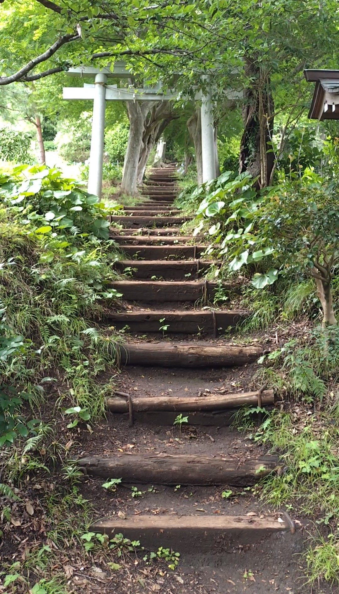
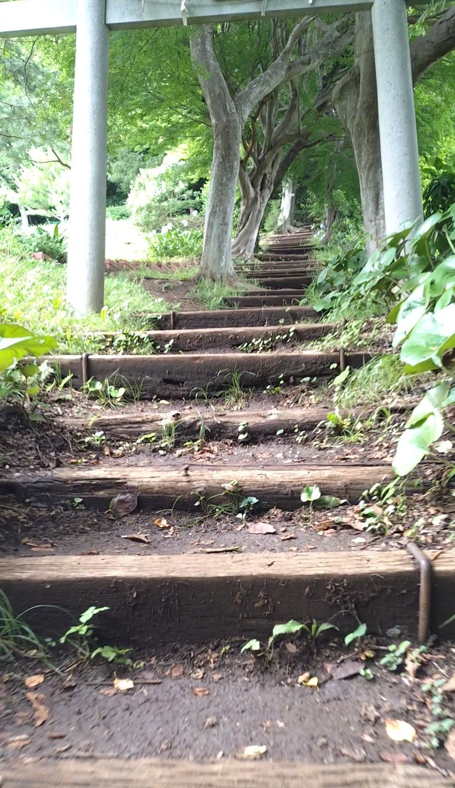
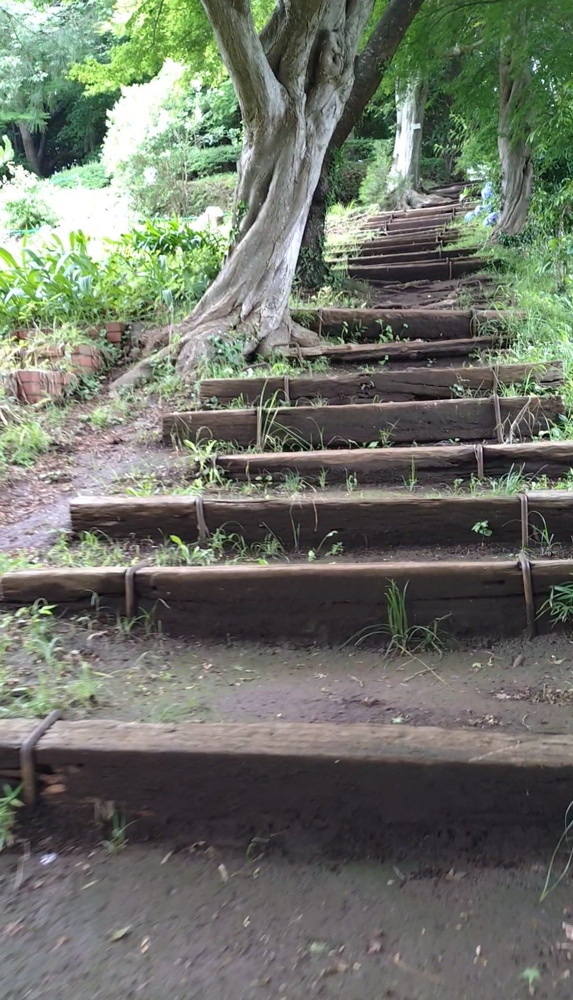
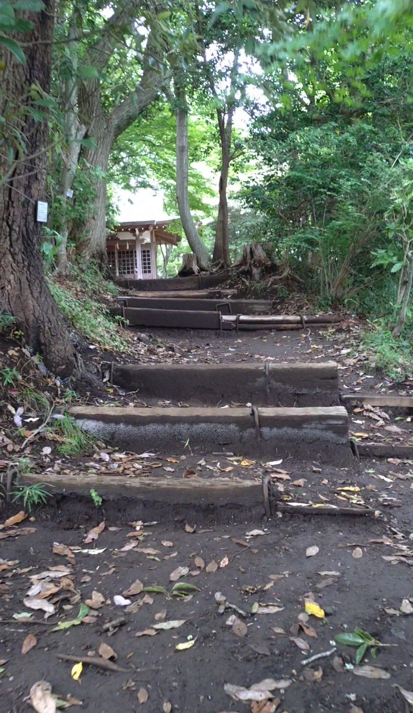
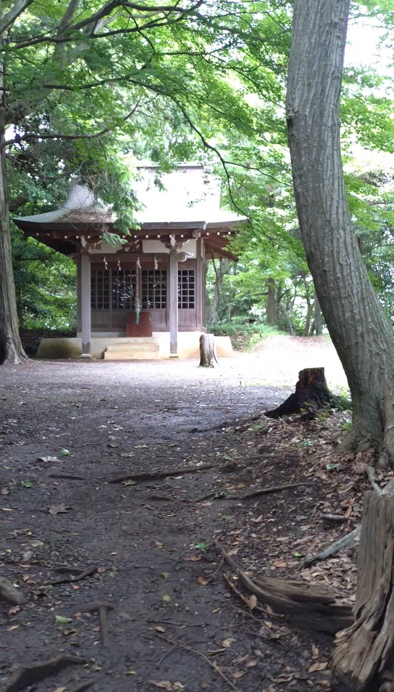
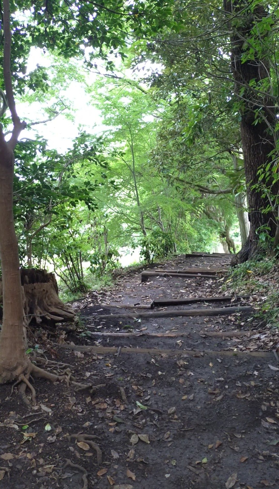

神奈川県中郡二宮町にある吾妻山公園には、公園の上のほうにひっそりと佇む小さな浅間神社があります。そこへと続くのが今回ご紹介する70段ほどの木の階段です。JR東海道本線の二宮駅から徒歩わずか5分という好立地にありながら、周囲の木々や草にすっかり溶け込んでいて、まるでアニメのワンシーンのような雰囲気。思わず立ち止まって見とれてしまいました。
JR東海道本線「二宮駅」下車、徒歩約5分。吾妻山公園内を進んだ先、公園の上のほうに浅間神社への入口があります。
木の階段が自然の中を通っているため、根や落ち葉で足元が滑りやすい場所があります。歩きやすい靴でお越しください。雨上がりは特に注意が必要です。
階段の入り口に着くと、小さな白い鳥居が立っていて、その奥へと階段が続いているのが見えます。周囲の緑と相まって、まるで「となりのトトロ」に出てきそうな世界観。鳥居の先へとそのまま導かれていくような感覚になりました。

鳥居をくぐり、階段を登り始めます。道の両端に生えている木々が少し内側に向かって枝を伸ばしているように見えて、木のアーチとはこのことだと感じました。

導かれるまま、奥へと進んでいきます。進むにつれて、少しずつ勾配が急になってきました。

木々の間から、神社の社がだんだんと見えてきました。ここまで来ると、ゴールが近いことが実感できます。

階段の終点に着きました。少し開けた場所に、小ぶりな社がひっそりと佇んでいます。社の色合いが周囲の自然と調和していて、静かで穏やかな空気に包まれていました。

終点から階段を振り返ります。階段というよりも、自然に木々の間にできあがった一本の道のような佇まい。人工物である階段が、これほどまでに周囲の風景に溶け込んでいる様子には驚かされました。
